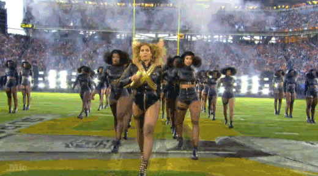
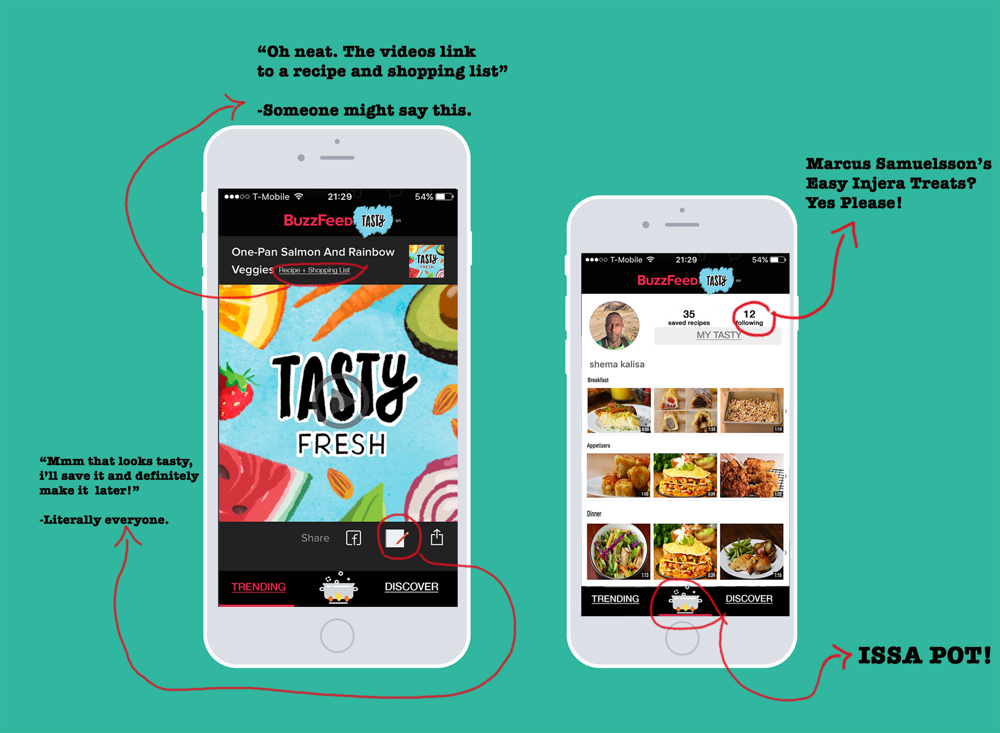
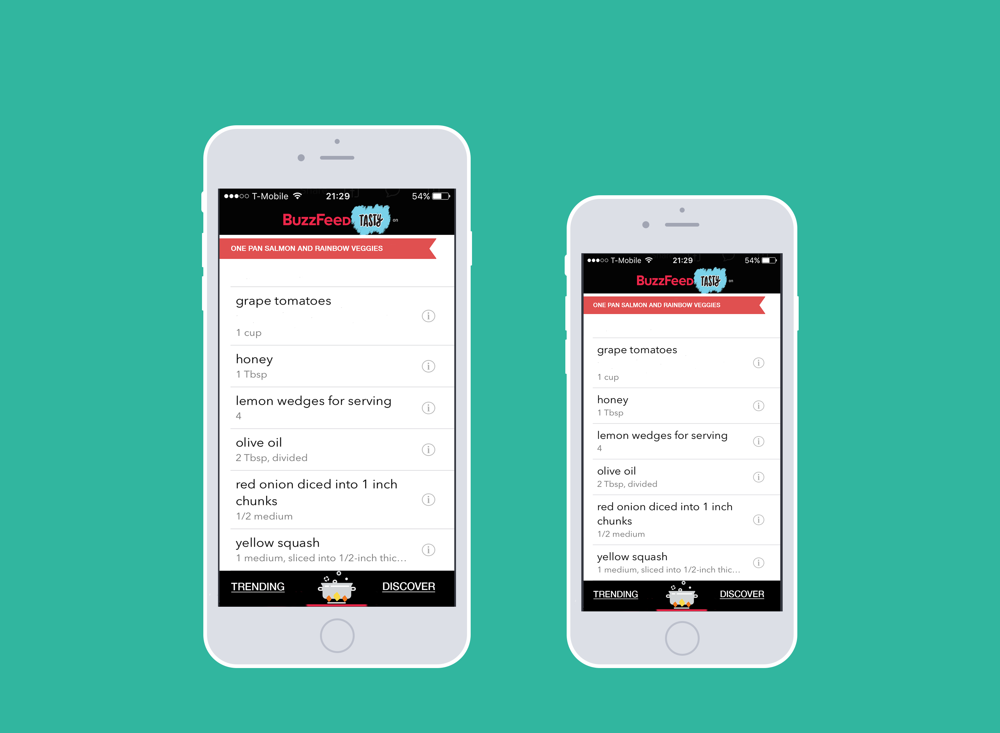
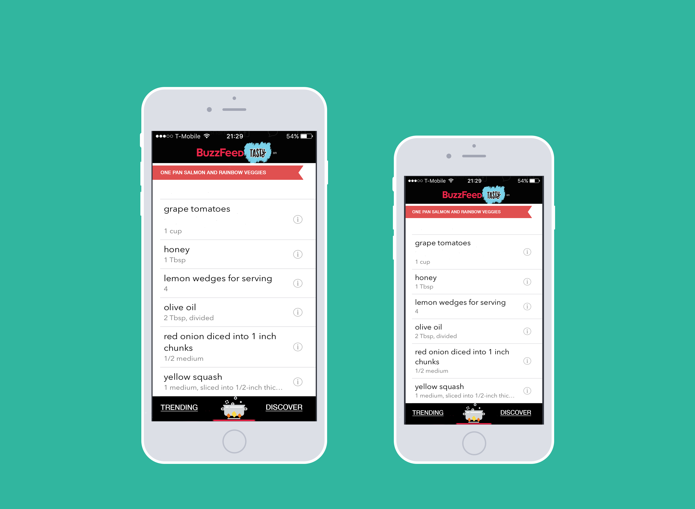
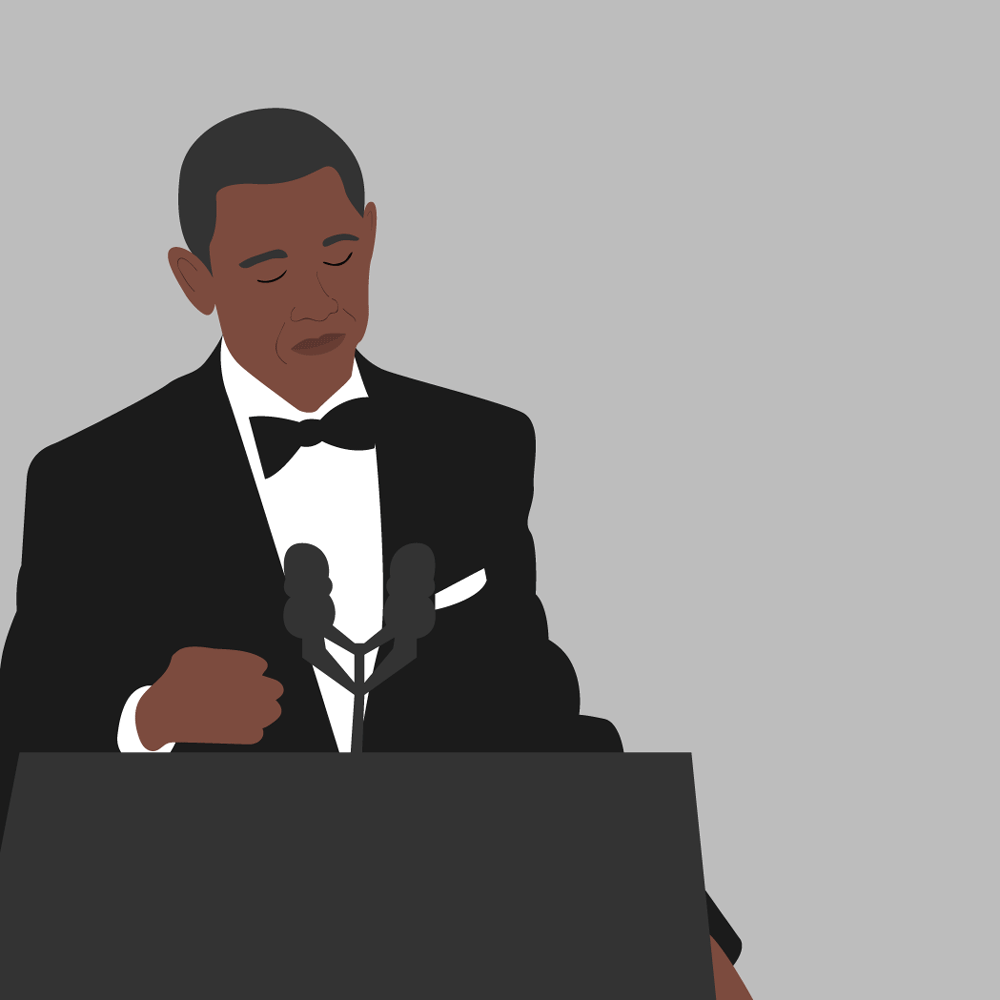

IDEA

MY HYPOTHESIS:
The people want a mobile application dedicated to Tasty.
- Tasty Videos.
- Tasty Recipes.
- Tasty Shopping.
- Tasty Community Hot Takes.
Tasty is more than entertainment. Tasty is a plan, a shopping list and a meal. Tasty is discovery and knowledge.
A dedicated Tasty app must exist. For the culture.

I needed to confirm this hypothesis, while at the same time confronting a serious lack of data. I decided to look to the people.
The data and how I used it:
- I read a years worth of Buzzfeed Video reviews on the US iOS App Store. The reviews were from 2/12/16 through 2/12/17.
- I tallied and logged reviews highlighting Tasty specifically.
- I tallied and logged the number of times other shows were mentioned.
- Looked for existing products and communties that align with hypothesis and demonstrate market validation.
A brief review of the reviews
A VERY NICE SPREADSHEET.
81 reviews explicitly cite Tasty as content that drives engagement.
10 of these reviews mentioned other shows.
- Try Guys: 4 reviews.
- Nifty: 3 reviews.
- Pero, Like: 2 reviews.
- Top Knot: 1 reviews.
10% of users in the sample explicitly cite Tasty as one of the reasons they use the Buzzfeed App.
88% of those users EXCLUSIVELY cite Tasty as the reason they used the Buzzfeed Video app.
Number of reviews explicitly citing other shows:
- Goodful : 63 reviews.
- Try Guys: 40 reviews.
- Nifty: 7 reviews.
- Broke: 3 reviews.
- Other shows: less than 3 reviews.
TASTY RN:

Check out this sweet spreadsheet to see what users were saying.
Existing products and Market Validation
In additon to being entertained, people want tools and direction that make it easy to transition from art on the screen to a shared experience IRL.
Big Oven
- 350K+ Recipes.
- Weekly organizer for planning meals.
- Shopping list from recipe.
Food Network In the Kitchen
- Videos and Photos from notable chefs.
- Add your own notes and substitutions.
- Multiple timers in app, for multi-dish meals.
All Recipes Dinner Spinner
- Recipes sourced from community of 30 + million.
- User reviews and ratings.
- Ability to see which ingredients are on sale and which recipes are cheapest on a given day.

A TASTY MVP

WHO IS THIS FOR?
- Tasty Viewers: This user views Tasty content primarily as entertainment. Plans to make one of these meals "someday".
- Tasty Makers: This user views Tasty content with an objective in mind. Planning meals for the week or preparing for a grocery run.
- Tasty Explorer: Event/Occasion driven user. This user is prepping for the big game, brainstorming potluck contributions or hosting a cocktail hour.
- Content Producers: They'll need to be able to push new content to the App and get access to content performance data and analytics.
WHY BUILD THIS?
- It's something the community wants.
- Opportunity to monetize through native video advertising and ecommerce integration.
- Opportunity to experiment with different content delivery platforms and reduce reliance on 3rd party platforms.
- Low technical risk.
WHAT DOES AN MVP LOOK LIKE?
- iOS and Android.
- Without an account: we can watch Tasty videos and each video links to text recipe and a shoppping list.
- With an account: we can bookmark and save our favorite video recipes.
- With an account: we can organize and view our favorite video recipes in one place.
- We can create an account and login using Facebook or Email.
- Content producers can push content using our CMS.
USER TYPES
- Non-Registered Users.
- Registered Users.
- Content Producers.
HERE ARE SOME MOCKUPS I HACKED TOGETHER

 


ABOUT
My name is Shema Gakuba-Mutsa Kalisa. I'm a passionate user advocate and aspiring Product Manager with 4 years of experience contributing meaningfully to cross-functional teams in product marketing and operational roles.
Most recently I Co-founded Gojimgo. We installed small wireless sensors on exercise equipment and provided property and gym managers with operational analytics.
- I worked on Gojimgo from idea through to launch. Wireframing, testing, writing user stories and PRD's.
- I identified, sourced and tested our hardware solution.
- Slack wrangled and managed a distributed team.
- Brought on 4 Universities to participate in pilots.
Prior to Gojimgo I worked at Mast Mobile a venture backed startup in NYC. I owned several high priority areas, both client facing and operational. I had the opportunity to work closely with product, sales and engineering teams to develop onboarding best practices, grow existing accounts, collect and report product feedback.
- I planned and executed device deployments, customer on boarding and systems integration
- Owned customer success processes
- Developed device replacement,repair and redeployment processes
THINGS I'VE MADE
RELEVANT TASKS AND ABILITY
- AB testing
- Wireframing, writing product specs and tests
- Google Analytics, Mixpanel
- SQL (Basic)
- Ability to build consensus
- Empathy
FUN FACTS
- Grew up in Johannesburg, South Africa
- "Rocket Man" in Karaoke. Every. Single. Time.
- I once built an irrigation system for a Wing-Chun instructor who lived off the grid in Riverside, California.
- Love to Kayak.
- US Citizen
Thanks for taking the time to review my little project. If you have any questions please feel free to send me a note at shemagmkalisa@gmail.com
